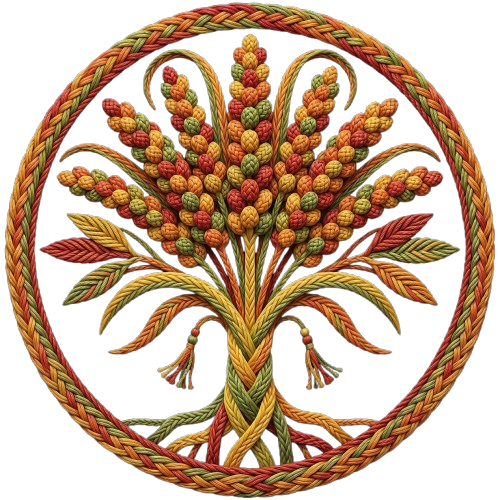

全鄉阿美族群
花蓮縣秀林鄉 · 8/29 六 · 秀林鄉佳民村多功能聚會所
涵蓋花蓮縣、臺東縣共 175+ 部落，資料來源：各縣市原民處官方公告。
花蓮縣秀林鄉 · 8/29 六 · 秀林鄉佳民村多功能聚會所
花蓮縣新城鄉 · 7/25 六 · 巴拉米旦聚會所
花蓮縣新城鄉 · 8/1 六 · 佳林部落社區廣場
花蓮縣新城鄉 · 8/1 六 · 復興部落聚會所
花蓮縣新城鄉 · 8/15 六 · 東方羅馬社區籃球場廣場
花蓮縣新城鄉 · 8/15 六 · 華陽部落聚會所
花蓮縣新城鄉 · 8/15 六 · 北埔聚會所
花蓮縣新城鄉 · 8/22 六 · 嘉里部落聚會所
花蓮縣新城鄉 · 8/22 六 · 大德部落聚會所
花蓮縣新城鄉 · 8/22 六 · 嘉新部落聚會所
花蓮縣花蓮市 · 7/25 六 · 林芥公園
花蓮縣花蓮市 · 7/26 日 · 拉署旦部落聚會所
花蓮縣花蓮市 · 8/1 六 · 花蓮市原住民文化歷史館旁扶輪公園
花蓮縣花蓮市 · 8/1 六 · 吉寶竿部落聚會所
花蓮縣花蓮市 · 8/1 六 · 球崙運動公園
花蓮縣花蓮市 · 8/1 六 · 花蓮縣立體育場 A 區停車場
花蓮縣花蓮市 · 8/8 六 · 根努夷部落聚會所
花蓮縣花蓮市 · 8/8 六 · 拉署旦部落聚會所
花蓮縣花蓮市 · 8/8 六 · 中山公園禾埕風雨球場
花蓮縣花蓮市 · 8/15 六 · 撒固兒部落聚會所
花蓮縣花蓮市 · 8/16 日 · 巴爾巴爾蘭祭祀廣場
花蓮縣花蓮市 · 8/22 六 · 大本部落聚會所
花蓮縣吉安鄉 · 8/1 六 · 慶豐部落聚會所
花蓮縣吉安鄉 · 8/1 六 · 南埔公園停車場
花蓮縣吉安鄉 · 8/1 六 · 歌柳部落廣場
花蓮縣吉安鄉 · 8/8 六 · 南埔公園停車場
花蓮縣吉安鄉 · 8/9 日 · 希望公園
花蓮縣吉安鄉 · 8/15 六 · 小台東部落廣場
花蓮縣吉安鄉 · 8/15 六 · 簿簿聚會所
花蓮縣吉安鄉 · 8/15 六 · 光華部落聚會所
花蓮縣吉安鄉 · 8/15 六 · 北昌社區活動中心
花蓮縣吉安鄉 · 8/15 六 · 希望公園
花蓮縣吉安鄉 · 8/15 六 · 南華部落聚會所
花蓮縣吉安鄉 · 8/15 六 · 永安社區活動中心
花蓮縣吉安鄉 · 8/16 日 · 七腳川部落聚會所
花蓮縣吉安鄉 · 8/22 六 · 化仁國小
花蓮縣吉安鄉 · 8/22 六 · 干城村籃球場
花蓮縣吉安鄉 · 8/23 日 · 娜荳蘭部落聚會所
花蓮縣吉安鄉 · 8/23 日 · 娜荳蘭部落聚會所
花蓮縣吉安鄉 · 8/29 六（暫定） · 仁安部落聚會所
花蓮縣吉安鄉 · 8/29 六 · 娜荳蘭部落聚會所
花蓮縣壽豐鄉 · 7/18 六 · 豐裡聚會所
花蓮縣壽豐鄉 · 7/25 六 · 豐山聚會所
花蓮縣壽豐鄉 · 8/1 六 · 志昌廣場
花蓮縣壽豐鄉 · 8/1 六 · 米棧活動中心
花蓮縣壽豐鄉 · 8/8 六 · 平和聚會所
花蓮縣壽豐鄉 · 8/8 六 · 白天文蘭國小；晚上原舞者廣場
花蓮縣壽豐鄉 · 8/8 六 · 前頭目邱田發自宅前廣場
花蓮縣壽豐鄉 · 8/9 日 · 鹽寮聚會所
花蓮縣壽豐鄉 · 8/9 日 · 水璉部落聚會所
花蓮縣壽豐鄉 · 8/15 六 · 光榮部落聚會所
花蓮縣壽豐鄉 · 8/22 六 · 上午溪口國小；下午溪口聚會所
花蓮縣壽豐鄉 · 8/22 六 · 月眉國小
花蓮縣壽豐鄉 · 8/22 六 · 壽豐國小；中午原住民多功能活動中心
花蓮縣壽豐鄉 · 8/29 六 · 共和聚會所
花蓮縣鳳林鎮 · 7/25 六 · 大榮里二村活動中心
花蓮縣鳳林鎮 · 8/1 六 · 前山興國小操場
花蓮縣鳳林鎮 · 8/8 六 · 前鳳信國小操場
花蓮縣鳳林鎮 · 8/15 六 · 森榮國小操場
花蓮縣鳳林鎮 · 8/15 六 · 森榮國小操場
花蓮縣鳳林鎮 · 8/22 六 · 中興活動中心
花蓮縣光復鄉 · 8/1 六 · 阿多莫活動中心
花蓮縣豐濱鄉 · 7/12 日 · 三富橋部落廣場
花蓮縣豐濱鄉 · 7/15 三 · 靜安部落廣場
花蓮縣豐濱鄉 · 7/17 五 · 太陽廣場
花蓮縣豐濱鄉 · 7/18 六 · 大港口廣場
花蓮縣豐濱鄉 · 7/23 · 港口天主教堂廣場
花蓮縣豐濱鄉 · 8/3 一 · 立德部落廣場
花蓮縣豐濱鄉 · 8/7 五 · 東興廣場
花蓮縣豐濱鄉 · 8/8 六 · 八里灣部落廣場
花蓮縣豐濱鄉 · 8/8 六 · 新社國小運動場
花蓮縣豐濱鄉 · 8/8 六 · 豐濱河濱公園
花蓮縣豐濱鄉 · 8/9 日 · 豐富部落廣場
花蓮縣豐濱鄉 · 8/16 日 · 龜庵天主堂對面廣場
花蓮縣瑞穗鄉 · 7/26 日 · 法淖部落聚會所
花蓮縣瑞穗鄉 · 8/1 六 · 鶴岡屋拉力集貨場
花蓮縣瑞穗鄉 · 8/8 六 · 烏槓聚會所
花蓮縣瑞穗鄉 · 8/8 六 · 娜魯灣部落聚會所
花蓮縣瑞穗鄉 · 8/9 日 · 舞鶴活動中心前廣場
花蓮縣瑞穗鄉 · 8/9 日 · 梧繞部落聚會所
花蓮縣瑞穗鄉 · 8/15 六 · 拉基禾幹部落聚會所
花蓮縣瑞穗鄉 · 8/15 六 · 溫泉部落聚會所
花蓮縣瑞穗鄉 · 8/15 六 · 馬立雲部落聚會所
花蓮縣瑞穗鄉 · 8/15 六 · 馬聚集部落聚會所
花蓮縣瑞穗鄉 · 8/15 六 · 牧魯棧聚會所
花蓮縣瑞穗鄉 · 8/15 六 · 阿多瀾聚會所
花蓮縣瑞穗鄉 · 8/15 六 · 拉加善部落聚會所
花蓮縣瑞穗鄉 · 8/15 六 · 鶺魯棧聚會所預定地
花蓮縣瑞穗鄉 · 8/16 日 · 迦納納部落聚會所
花蓮縣瑞穗鄉 · 8/17 一 · 奇美部落聚會所
花蓮縣玉里鎮 · 7/25 六 · 高寮聚會所
花蓮縣玉里鎮 · 8/1 六 · 自強三街旁廣場
花蓮縣玉里鎮 · 8/8 六 · 北平街旁廣場
花蓮縣玉里鎮 · 8/14 五 · 樂合里 20 鄰 98 號前廣場
花蓮縣玉里鎮 · 8/15 六 · 下德武部落聚會所
花蓮縣玉里鎮 · 8/15 六 · 春日里部落跳舞廣場
花蓮縣玉里鎮 · 8/15 六 · 吉能能麥部落聚會所
花蓮縣玉里鎮 · 8/16 日 · 德武里祭祀活動廣場
花蓮縣玉里鎮 · 8/22 六 · 樂合里部落跳舞廣場
花蓮縣玉里鎮 · 8/22 六 · 春日里部落跳舞廣場
花蓮縣玉里鎮 · 8/22 六 · 東豐天主教堂廣場
花蓮縣玉里鎮 · 8/22 六 · 督旮薾聚會所
花蓮縣玉里鎮 · 8/22 六 · 安通 57 號部落聚會所
花蓮縣玉里鎮 · 8/22 六 · 松浦里部落跳舞廣場
花蓮縣玉里鎮 · 8/23 日 · 松浦里部落聚會所
花蓮縣玉里鎮 · 8/23 日 · 松浦國小旁多功能活動廣場
花蓮縣玉里鎮 · 9/24 四 · 三民土地公廟廣場
花蓮縣玉里鎮 · 9/26 六 · 源城里多功能活動廣場
花蓮縣玉里鎮 · 9/26 六 · 長良里土地公廟旁跳舞廣場
花蓮縣玉里鎮 · 9/26 六 · 大禹土地公廟廣場
花蓮縣富里鄉 · 7/25 六 · 姆拉丁跳舞廣場
花蓮縣富里鄉 · 8/1 六 · 復興部落多功能活動中心
花蓮縣富里鄉 · 8/8 六 · 達蘭埠部落聚會場
花蓮縣富里鄉 · 8/9 日 · 馬里旺部落聚會場
花蓮縣富里鄉 · 8/15 六 · 明里村福德寺前廣場
花蓮縣富里鄉 · 8/16 日 · 露埔部落跳舞場
花蓮縣富里鄉 · 8/22 六 · 吉拉米代部落祭祀廣場
花蓮縣富里鄉 · 8/29 六 · 吳江村前空地
臺東縣池上鄉 · 8/7 五–8/9 日 · 大埔聚會所，大埔村 55-1 號
臺東縣池上鄉 · 8/7 五–8/9 日 · 慶豐聚會所，慶豐村 77-8 號
臺東縣池上鄉 · 8/7 五–8/9 日 · 陸安聚會所，大埔村陸安 27 號
臺東縣池上鄉 · 8/14 五–8/16 日 · 甲道聚會所，福原村忠孝路 2 號
臺東縣池上鄉 · 8/14 五–8/16 日 · 大坡聚會所，大坡村 18 號
臺東縣池上鄉 · 8/14 五–8/16 日 · 福文聚會所，福文村大同路 88 號
臺東縣池上鄉 · 8/21 五–8/23 日 · 新興聚會所，新興村一路 1 號
臺東縣池上鄉 · 8/21 五–8/23 日 · 振興聚會所，振興村 36-1 號
臺東縣池上鄉 · 8/21 五–8/23 日 · 富興聚會所，富興村水墜 62-5 號
臺東縣長濱鄉 · 7/16–7/19 · （地點未完整擷取）
臺東縣東河鄉 · 8/15（暫訂） · 東河國小
臺東縣成功鎮 · 7/9–7/10；迎賓日 7/10 · 忠智里活動中心
臺東縣成功鎮 · 7/9–7/11 · 麒麟活動中心
臺東縣成功鎮 · 7/17–7/20 · 美山活動中心露天場地
臺東縣長濱鄉 · 7/16–7/19 · （詳見來源）
臺東縣臺東市 · 7/3 五–7/11 六 · 馬蘭部落文化廣場及傳統領域
臺東縣臺東市 · 7/5 日–7/10 五 · 新馬蘭聚會所
臺東縣臺東市 · 7/18 六–7/19 日 · 新園社區青年活動中心（新園路 434 巷 6 號）
花蓮縣新城鄉 · 5/30 六 · 復興部落聚會所
花蓮縣玉里鎮 · 8/8 六 · 中城里 11 鄰 6 號
花蓮縣新城鄉 · 8/29 六 · 新城鄉原住民多功能活動中心
花蓮縣花蓮市 · 8/22 六 · 花蓮市原住民文化歷史館旁扶輪公園
花蓮縣吉安鄉 · 9/12 六 · 鬱金香花園
花蓮縣萬榮鄉 · 6/27 六 · 馬遠部落多功能聚會所

Ilisin